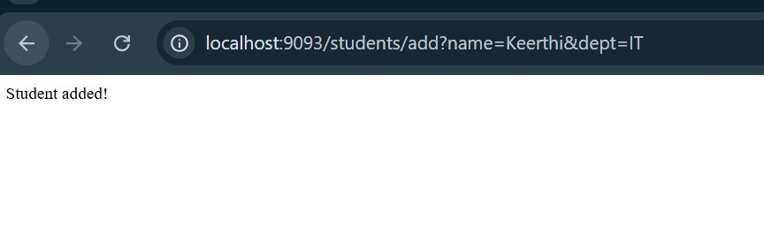
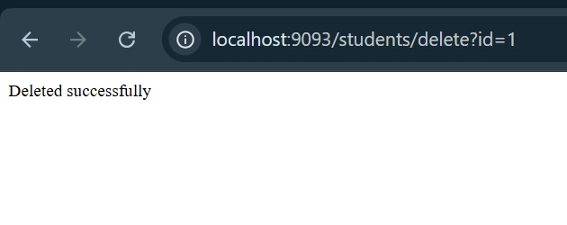
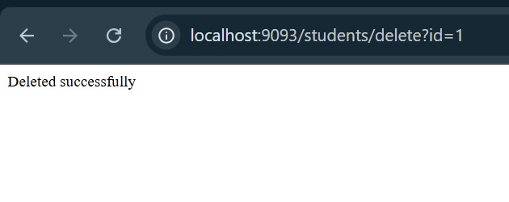
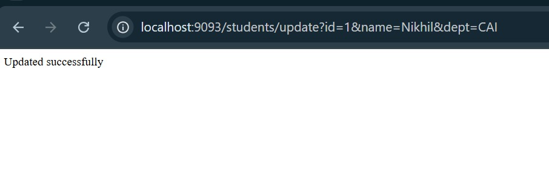
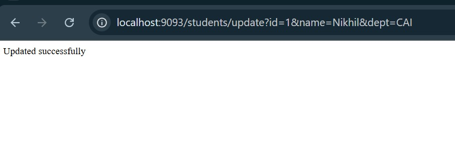
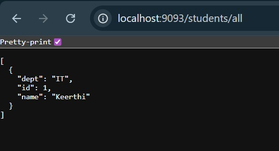
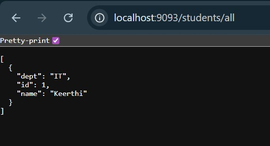

WEEK-10
Spring Boot Lab Programs:
Lab 1 – Hello World with Spring Boot
AIM: To create a simple “Hello World” web application using Spring Boot.
CODE:
1. Create a project using Spring Initializr with dependency Spring Web.
2. Add the following controller:
Demoapplication.java:
package com.example.demo;
import org.springframework.boot.SpringApplication;
import org.springframework.boot.autoconfigure.SpringBootApplication;
import org.springframework.web.bind.annotation.GetMapping;
import org.springframework.web.bind.annotation.RestController;
@SpringBootApplication
@RestController
public class DemoApplication {
@GetMapping("/hello")
public String sayHello() {
return "Hello World! Welcome to Spring Boot.";
}
public static void main(String[] args) {
SpringApplication.run(DemoApplication.class, args);
}
}
OUTPUT:
Lab 2 – Using @RequestParam and @PathVariable
AIM: To pass parameters dynamically through URL and query.
CODE:
@RestController
@RequestMapping("/api")
public class WelcomeController {
@GetMapping("/welcome")
public String welcome(@RequestParam String name) {
return "Welcome " + name + "!";
}
@GetMapping("/square/{num}")
public String square(@PathVariable int num) {
return "Square of " + num + " = " + (num * num);
}
}
OUTPUT:
Lab 3 – Controller, Service, and Autowiring
AIM: To implement service layer using @Service and @Autowired.
CODE:
@Service
public class MathService {
public int add(int a, int b) {
return a + b;
}
}
@RestController
@RequestMapping("/math")
public class MathController {
@Autowired
private MathService service;
@GetMapping("/add")
public String add(@RequestParam int x, @RequestParam int y) {
return "Sum = " + service.add(x, y);
}
}
OUTPUT:
Lab 4 – CRUD Operation with Spring Boot and MySQL
AIM: To create REST APIs for Create, Read, Update, Delete (CRUD).
Dependencies: Spring Web, Spring Data JPA, MySQL Driver.
CODE:
Model:
@Entity
public class Student {
@Id
@GeneratedValue(strategy = GenerationType.IDENTITY)
private int id;
private String name;
private String dept;
}
Repository:
public interface StudentRepository extends JpaRepository
Controller:
@RestController
@RequestMapping("/students")
public class StudentController {
@Autowired
private StudentRepository repo;
@PostMapping("/")
public Student addStudent(@RequestBody Student s) {
return repo.save(s);
}
@GetMapping("/")
public List
return repo.findAll();
}
@PutMapping("/{id}")
public Student update(@PathVariable int id, @RequestBody Student s) {
s.setId(id);
return repo.save(s);
}
@DeleteMapping("/{id}")
public void delete(@PathVariable int id) {
repo.deleteById(id);
}
}
application.properties:
server.port=8085
spring.datasource.url=jdbc:mysql://localhost:3306/school
spring.datasource.username=root
spring.datasource.password=1234
OUTPUT:
RESULT:
Program executed successfully.

 
 
 
